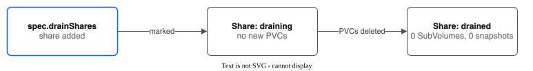

Part 4: Pool Configuration¶
Tutorial Series: Index | Part 1: Pool Creation | Part 2: Snapshots & Clones | Part 3: Group Snapshots & Hooks | Part 4 | Part 5: Golden Images | Part 6: Replication & Failover | Part 7: Monitoring | Part 8: Migration & Console | Part 9: COS Bucket for Backups
Step-by-step guide to advanced pool configuration: multi-tier pools, allocation strategies, auto-expansion, and share draining. Each section creates a pool, demonstrates the behavior, and verifies the result.
Cluster: ROKS eu-de (OpenShift Virtualization enabled) Zone: eu-de-1
Prerequisites¶
Verify the CSI driver is running:
# Controller pod (6/6 Running)
oc get pods -n kube-system -l app.kubernetes.io/name=ibm-vpc-file-pool-csi,app.kubernetes.io/component=controller
# Node pods (2/2 Running on each schedulable node)
oc get pods -n kube-system -l app.kubernetes.io/name=ibm-vpc-file-pool-csi,app.kubernetes.io/component=node
# CSI Driver registered
oc get csidriver vpc-file-pool.csi.ibm.io
Set shell variables used throughout this tutorial:
Section 1: Multi-Tier Pool¶
A multi-tier pool creates different classes of storage within a single pool. Each tier has its own VPC share profile, size, IOPS, and share count. The controller auto-creates one StorageClass per tier, named <pool>-<tier>.
Step 1a: Create the Tiered Pool¶
cat <<EOF | oc apply -f -
apiVersion: storage.ibmcloud.io/v1alpha1
kind: FileSharePool
metadata:
name: tiered-pool
spec:
zone: eu-de-1
profile: dp2
shareSizeGB: 100
maxShares: 4
initialShares: 0
autoExpand: true
expandThresholdPercent: 80
allocationStrategy: spread
defaultPermissions: "0755"
tiers:
- name: standard
profile: dp2
shareSizeGB: 100
iops: 100
maxShares: 2
initialShares: 1
- name: premium
profile: dp2
shareSizeGB: 100
iops: 1000
maxShares: 2
initialShares: 1
EOF
What this does:
- Creates a pool named tiered-pool with two performance tiers
- The standard tier creates 100 GB shares at 100 IOPS (cost-effective for bulk storage)
- The premium tier creates 100 GB shares at 1000 IOPS (high performance for databases or VMs)
- Each tier pre-creates 1 share immediately and can expand to 2 shares
- The top-level profile/shareSizeGB/maxShares/initialShares fields are ignored when tiers are defined
Watch the pool initialize (each tier creates its initial share, so expect 2 VPC shares):
Wait until PHASE shows Ready:
Step 1b: Verify Auto-Created StorageClasses¶
The controller creates one StorageClass per tier. Each StorageClass includes a tier parameter that routes PVCs to the correct tier's shares.
Expected output:
NAME PROVISIONER RECLAIMPOLICY VOLUMEBINDINGMODE ALLOWVOLUMEEXPANSION AGE
tiered-pool-standard vpc-file-pool.csi.ibm.io Delete Immediate true 30s
tiered-pool-premium vpc-file-pool.csi.ibm.io Delete Immediate true 30s
Inspect the parameters to confirm tier routing:
oc get sc tiered-pool-standard -o yaml | grep -A5 parameters
oc get sc tiered-pool-premium -o yaml | grep -A5 parameters
Expected:
# tiered-pool-standard
parameters:
permissions: "0755"
pool: tiered-pool
tier: standard
# tiered-pool-premium
parameters:
permissions: "0755"
pool: tiered-pool
tier: premium
Step 1c: Create PVCs on Each Tier¶
cat <<EOF | oc apply -f -
apiVersion: v1
kind: PersistentVolumeClaim
metadata:
name: standard-data
namespace: ${TUTORIAL_NS}
spec:
accessModes:
- ReadWriteMany
storageClassName: tiered-pool-standard
resources:
requests:
storage: 5Gi
---
apiVersion: v1
kind: PersistentVolumeClaim
metadata:
name: premium-data
namespace: ${TUTORIAL_NS}
spec:
accessModes:
- ReadWriteMany
storageClassName: tiered-pool-premium
resources:
requests:
storage: 5Gi
EOF
What this does:
- standard-data is allocated on a standard-tier share (100 IOPS)
- premium-data is allocated on a premium-tier share (1000 IOPS)
Verify both PVCs are Bound:
Expected:
NAME STATUS VOLUME CAPACITY ACCESS MODES STORAGECLASS AGE
standard-data Bound pvc-aaaa... 5Gi RWX tiered-pool-standard 10s
premium-data Bound pvc-bbbb... 5Gi RWX tiered-pool-premium 10s
Step 1d: Verify SubVolumes Land on Different Shares¶
Expected output shows each SubVolume on a different share with a different tier:
NAME POOL SHARE SIZE PVC NAMESPACE PHASE
pvc-aaaa... tiered-pool r010-standard-.. 5 standard-data pool-tutorial-config Bound
pvc-bbbb... tiered-pool r010-premium-.. 5 premium-data pool-tutorial-config Bound
The share IDs will differ because each tier has its own set of VPC file shares. Confirm the tier field in the pool status:
oc get filesharepool tiered-pool -o jsonpath='{range .status.shares[*]}{.shareName} tier={.tier}{"\n"}{end}'
Expected:
Step 1e: Verify Pool Capacity¶
Expected:
The pool shows 200 GB total capacity (100 GB per tier) with 10 GB allocated across 2 PVCs.
Section 2: Allocation Strategies¶
The allocationStrategy field controls how PVCs are distributed across shares within a pool:
spread(default) distributes PVCs evenly across all available shares, reducing the blast radius if a single share has problemsbinpackfills one share as much as possible before using the next, minimizing the number of active shares
Step 2a: Create a Spread Pool¶
cat <<EOF | oc apply -f -
apiVersion: storage.ibmcloud.io/v1alpha1
kind: FileSharePool
metadata:
name: spread-pool
spec:
zone: eu-de-1
profile: dp2
shareSizeGB: 100
iops: 100
maxShares: 3
initialShares: 2
autoExpand: false
allocationStrategy: spread
defaultPermissions: "0755"
EOF
What this does:
- Creates a pool with 2 pre-created shares (100 GB each)
- Uses spread strategy: new PVCs are distributed evenly across shares
- autoExpand: false prevents creating a third share, so we can observe the distribution on exactly 2 shares
Wait for Ready:
Step 2b: Create a Binpack Pool¶
cat <<EOF | oc apply -f -
apiVersion: storage.ibmcloud.io/v1alpha1
kind: FileSharePool
metadata:
name: binpack-pool
spec:
zone: eu-de-1
profile: dp2
shareSizeGB: 100
iops: 100
maxShares: 3
initialShares: 2
autoExpand: false
allocationStrategy: binpack
defaultPermissions: "0755"
EOF
What this does:
- Same configuration as spread-pool, but uses binpack strategy
- New PVCs will fill the first share before allocating to the second
Wait for Ready:
Step 2c: Allocate PVCs on Each Pool¶
Create 6 small PVCs on the spread pool:
for i in $(seq 1 6); do
cat <<EOF | oc apply -f -
apiVersion: v1
kind: PersistentVolumeClaim
metadata:
name: spread-pvc-${i}
namespace: ${TUTORIAL_NS}
spec:
accessModes:
- ReadWriteMany
storageClassName: spread-pool
resources:
requests:
storage: 2Gi
EOF
done
Create 6 small PVCs on the binpack pool:
for i in $(seq 1 6); do
cat <<EOF | oc apply -f -
apiVersion: v1
kind: PersistentVolumeClaim
metadata:
name: binpack-pvc-${i}
namespace: ${TUTORIAL_NS}
spec:
accessModes:
- ReadWriteMany
storageClassName: binpack-pool
resources:
requests:
storage: 2Gi
EOF
done
Wait for all PVCs to bind:
Step 2d: Compare Distributions¶
Check SubVolume placement for the spread pool:
echo "=== Spread Pool ==="
oc get subvolumes -l storage.ibmcloud.io/pool=spread-pool -o custom-columns=\
NAME:.metadata.name,SHARE:.spec.shareID,SIZE:.spec.requestedGB,PVC:.spec.pvcName
Expected: PVCs are distributed roughly evenly (3 per share):
NAME SHARE SIZE PVC
pvc-aaaa... r010-share-1-... 2 spread-pvc-1
pvc-bbbb... r010-share-2-... 2 spread-pvc-2
pvc-cccc... r010-share-1-... 2 spread-pvc-3
pvc-dddd... r010-share-2-... 2 spread-pvc-4
pvc-eeee... r010-share-1-... 2 spread-pvc-5
pvc-ffff... r010-share-2-... 2 spread-pvc-6
Check SubVolume placement for the binpack pool:
echo "=== Binpack Pool ==="
oc get subvolumes -l storage.ibmcloud.io/pool=binpack-pool -o custom-columns=\
NAME:.metadata.name,SHARE:.spec.shareID,SIZE:.spec.requestedGB,PVC:.spec.pvcName
Expected: PVCs are packed onto the first share until it has more allocations, then overflow to the second:
NAME SHARE SIZE PVC
pvc-gggg... r010-share-1-... 2 binpack-pvc-1
pvc-hhhh... r010-share-1-... 2 binpack-pvc-2
pvc-iiii... r010-share-1-... 2 binpack-pvc-3
pvc-jjjj... r010-share-1-... 2 binpack-pvc-4
pvc-kkkk... r010-share-1-... 2 binpack-pvc-5
pvc-llll... r010-share-1-... 2 binpack-pvc-6
Verify the pool-level allocation summary:
Expected:
NAME ZONE PROFILE SHARES CAPACITY ALLOCATED PVCS PHASE
spread-pool eu-de-1 dp2 2 200 12 6 Ready
binpack-pool eu-de-1 dp2 2 200 12 6 Ready
Both pools show the same totals (200 GB capacity, 12 GB allocated, 6 PVCs), but the distribution across shares differs. In a production environment: - Use spread when you want to minimize the impact of a single share failure (fewer PVCs affected per share) - Use binpack when you want to minimize the number of VPC shares in use (cost optimization)
Section 3: Auto-Expansion¶
When autoExpand: true, the pool manager automatically creates new VPC file shares when the pool-wide allocation percentage exceeds expandThresholdPercent. This prevents the pool from reaching capacity and rejecting new PVC requests.
Step 3a: Create the Expand Pool¶
cat <<EOF | oc apply -f -
apiVersion: storage.ibmcloud.io/v1alpha1
kind: FileSharePool
metadata:
name: expand-pool
spec:
zone: eu-de-1
profile: dp2
shareSizeGB: 20
iops: 100
maxShares: 3
initialShares: 1
autoExpand: true
expandThresholdPercent: 80
allocationStrategy: spread
defaultPermissions: "0755"
EOF
What this does:
- Creates a pool with a single 20 GB share
- expandThresholdPercent: 80 means a new share is created when more than 80% of capacity is allocated (i.e., when more than 16 GB is allocated on a 20 GB share)
- maxShares: 3 caps expansion at 3 shares (60 GB total)
Wait for Ready:
Expected:
Step 3b: Allocate PVCs to Trigger Expansion¶
First, allocate PVCs that stay below the 80% threshold:
for i in $(seq 1 3); do
cat <<EOF | oc apply -f -
apiVersion: v1
kind: PersistentVolumeClaim
metadata:
name: expand-pvc-${i}
namespace: ${TUTORIAL_NS}
spec:
accessModes:
- ReadWriteMany
storageClassName: expand-pool
resources:
requests:
storage: 5Gi
EOF
done
Check the pool (15 GB allocated out of 20 GB = 75%, below the 80% threshold):
Expected:
Now allocate one more PVC to push past 80%:
cat <<EOF | oc apply -f -
apiVersion: v1
kind: PersistentVolumeClaim
metadata:
name: expand-pvc-4
namespace: ${TUTORIAL_NS}
spec:
accessModes:
- ReadWriteMany
storageClassName: expand-pool
resources:
requests:
storage: 2Gi
EOF
What this does: - Allocates 2 more GB, bringing the total to 17 GB / 20 GB = 85%, which exceeds the 80% threshold - The pool manager triggers proactive expansion by creating a new VPC file share
Step 3c: Watch the Expansion¶
Expected phase transitions:
NAME ZONE PROFILE SHARES CAPACITY ALLOCATED PVCS PHASE
expand-pool eu-de-1 dp2 1 20 17 4 Ready
expand-pool eu-de-1 dp2 1 20 17 4 Expanding
expand-pool eu-de-1 dp2 2 40 17 4 Ready
What happened:
1. The pool detected 85% utilization (above the 80% threshold)
2. Phase changed to Expanding while the new VPC file share was being created
3. After the share was provisioned (30-90 seconds), phase returned to Ready with 2 shares and 40 GB capacity
Step 3d: Verify via VPC CLI¶
Expected — two shares:
r010-xxxx... expand-pool-share-1 eu-de-1 dp2 20 stable ...
r010-yyyy... expand-pool-share-2 eu-de-1 dp2 20 stable ...
Step 3e: Confirm New PVCs Use the New Share¶
cat <<EOF | oc apply -f -
apiVersion: v1
kind: PersistentVolumeClaim
metadata:
name: expand-pvc-5
namespace: ${TUTORIAL_NS}
spec:
accessModes:
- ReadWriteMany
storageClassName: expand-pool
resources:
requests:
storage: 5Gi
EOF
Because the pool uses spread strategy, the new PVC should land on the new (less-loaded) share:
oc get subvolumes -l storage.ibmcloud.io/pool=expand-pool -o custom-columns=\
NAME:.metadata.name,SHARE:.spec.shareID,SIZE:.spec.requestedGB,PVC:.spec.pvcName
Verify the updated capacity:
Expected:
Section 4: Share Draining¶
Share draining allows you to evacuate a specific VPC file share so it can be decommissioned. When a share is added to spec.drainShares, the pool manager:
- Marks the share's state as
draining - Excludes it from new PVC allocations
- Tracks the number of remaining SubVolumes in
status.drainStatus - Reports
drained: truewhen the share has zero SubVolumes and zero snapshots

Step 4a: Identify a Share to Drain¶
Use the expand-pool from the previous section. Find the share ID of the first share (the one with more PVCs):
DRAIN_SHARE_ID=$(oc get filesharepool expand-pool -o jsonpath='{.status.shares[0].shareID}')
echo "Share to drain: ${DRAIN_SHARE_ID}"
Check how many SubVolumes are on this share:
oc get subvolumes -l storage.ibmcloud.io/pool=expand-pool -o custom-columns=\
NAME:.metadata.name,SHARE:.spec.shareID,PVC:.spec.pvcName | grep "${DRAIN_SHARE_ID}"
Step 4b: Add the Share to drainShares¶
cat <<EOF | oc apply -f -
apiVersion: storage.ibmcloud.io/v1alpha1
kind: FileSharePool
metadata:
name: expand-pool
spec:
zone: eu-de-1
profile: dp2
shareSizeGB: 20
iops: 100
maxShares: 3
initialShares: 1
autoExpand: true
expandThresholdPercent: 80
allocationStrategy: spread
defaultPermissions: "0755"
drainShares:
- "${DRAIN_SHARE_ID}"
EOF
What this does:
- Adds the share ID to spec.drainShares
- The reconciler marks the share state as draining
- No new PVCs will be allocated on this share
Step 4c: Verify the Drain Started¶
Expected:
drainStatus:
- shareID: r010-xxxx...
remainingSubVolumes: 4
drained: false
drainStartedAt: "2026-02-25T..."
While a share drains, the pool phase is Degraded. This is by design: a draining share counts as not fully healthy. The phase returns to Ready after you remove the share from spec.drainShares.
Check the share state changed to draining:
Expected: state: draining
Step 4d: Verify New PVCs Avoid the Draining Share¶
cat <<EOF | oc apply -f -
apiVersion: v1
kind: PersistentVolumeClaim
metadata:
name: drain-test-pvc
namespace: ${TUTORIAL_NS}
spec:
accessModes:
- ReadWriteMany
storageClassName: expand-pool
resources:
requests:
storage: 2Gi
EOF
Check which share the new PVC landed on:
oc get subvolumes -l storage.ibmcloud.io/pool=expand-pool -o custom-columns=\
NAME:.metadata.name,SHARE:.spec.shareID,PVC:.spec.pvcName | grep drain-test-pvc
The share ID should be the second share (not the draining one).
Step 4e: Delete PVCs on the Draining Share to Complete the Drain¶
Identify which PVCs are on the draining share:
DRAIN_PVCS=$(oc get subvolumes -o json | jq -r \
".items[] | select(.spec.shareID == \"${DRAIN_SHARE_ID}\") | .spec.pvcName")
echo "PVCs on draining share: ${DRAIN_PVCS}"
Delete those PVCs:
Then check the drain status. The status changes on the next pool reconcile, which can take a few minutes, so repeat the command until drained is true:
Expected (once all PVCs are deleted):
drainStatus:
- shareID: r010-xxxx...
remainingSubVolumes: 0
drained: true
drainStartedAt: "2026-02-25T..."
What happened:
- As each PVC was deleted, the CSI driver deleted the corresponding SubVolume
- The reconciler recounted remaining SubVolumes and updated remainingSubVolumes
- When the count reached 0, the share was marked drained: true
Note: The draining mechanism does not automatically delete the VPC file share. You must remove the share ID from
spec.drainSharesand manually delete the VPC share viaibmcloud is share-delete <SHARE_ID>if you want to reclaim VPC quota.
Cleanup¶
Clean up all pools and resources created in this tutorial. Delete in reverse dependency order.
# 1. Delete all PVCs in the tutorial namespace
oc delete pvc --all -n ${TUTORIAL_NS} --timeout=60s
# 2. Grace period for CSI to cascade SubVolume deletes
sleep 5
# 3. Force-clean orphan SubVolumes for each pool
for POOL in tiered-pool spread-pool binpack-pool expand-pool; do
for sv in $(oc get subvolumes.storage.ibmcloud.io \
-l storage.ibmcloud.io/pool=${POOL} -o name 2>/dev/null); do
oc patch "$sv" --type=merge -p '{"metadata":{"finalizers":null}}'
done
oc delete subvolumes.storage.ibmcloud.io \
-l storage.ibmcloud.io/pool=${POOL} --ignore-not-found
done
# 4. Delete pool-owned PVs
oc get pv -o json | jq -r '
.items[]
| select(.spec.csi.driver == "vpc-file-pool.csi.ibm.io")
| select(.spec.csi.volumeAttributes.pool | test("tiered-pool|spread-pool|binpack-pool|expand-pool"))
| .metadata.name' | xargs -r oc delete pv
# 5. Delete pools (force-remove finalizers if stuck)
for POOL in expand-pool binpack-pool spread-pool tiered-pool; do
oc delete filesharepool ${POOL} --timeout=60s --ignore-not-found || {
oc patch filesharepools.storage.ibmcloud.io ${POOL} \
--type=merge -p '{"metadata":{"finalizers":null}}'
oc delete filesharepool ${POOL} --ignore-not-found
}
done
# 6. Delete namespace
oc delete namespace ${TUTORIAL_NS} --timeout=60s --ignore-not-found
# 7. Verify VPC shares are being deleted
ibmcloud is shares
Quick Reference¶
| What | Command |
|---|---|
| List pools | oc get filesharepools |
| Pool YAML (full status) | oc get filesharepool <name> -o yaml |
| List StorageClasses for a pool | oc get sc -l storage.ibmcloud.io/pool=<name> |
| StorageClass parameters | oc get sc <name> -o yaml \| grep -A5 parameters |
| SubVolumes by pool | oc get subvolumes -l storage.ibmcloud.io/pool=<name> -o wide |
| SubVolume share placement | oc get subvolumes -o custom-columns=NAME:.metadata.name,SHARE:.spec.shareID,PVC:.spec.pvcName |
| Pool share details | oc get filesharepool <name> -o jsonpath='{.status.shares}' |
| Drain status | oc get filesharepool <name> -o yaml \| grep -A15 drainStatus |
| VPC shares | ibmcloud is shares |
| Pool phase | oc get filesharepool <name> -o jsonpath='{.status.phase}' |
| Controller logs | oc logs -n kube-system -l app.kubernetes.io/component=controller -c csi-controller --tail=50 |
FileSharePool Configuration Reference¶
| Field | Type | Default | Description |
|---|---|---|---|
spec.zone |
string | (required) | VPC availability zone (e.g., eu-de-1) |
spec.profile |
string | (required) | VPC file storage profile. dp2 is the only one VPC offers |
spec.shareSizeGB |
int64 | 1000 | Size in GB per share (10-32000) |
spec.iops |
*int64 | (optional) | IOPS per share (min 100). The webhook rejects a value that IBM does not allow for the share size. For example, a share of 10 to 39 GB allows 100 to 1000 |
spec.maxShares |
int32 | 10 | Maximum shares (1-100) |
spec.initialShares |
int32 | 1 | Shares to pre-create (min 0) |
spec.autoExpand |
bool | true | Auto-create shares when capacity is low |
spec.expandThresholdPercent |
int32 | 80 | Allocation % that triggers expansion (50-95) |
spec.allocationStrategy |
enum | spread | spread or binpack |
spec.encryptionInTransit |
bool | false | NFSv4.1 + Kerberos encryption |
spec.defaultPermissions |
string | "0755" | Unix permissions for subdirectories |
spec.defaultUID |
*int64 | (optional) | Owner UID for subdirectories |
spec.defaultGID |
*int64 | (optional) | Owner GID for subdirectories |
spec.resourceGroup |
string | (optional) | IBM Cloud resource group ID |
spec.tags |
[]string | (optional) | IBM Cloud tags for created shares |
spec.securityGroupIDs |
[]string | (optional) | VPC security groups for each share's mount target. When empty, the cluster's own group kube-<cluster ID> is used |
spec.mountOptions |
[]string | (optional) | Additional NFS mount options |
spec.accessorZones |
[]AccessorZone | (optional) | Cross-zone mount targets |
spec.tiers |
[]ShareTier | (optional) | Multi-tier configuration |
spec.drainShares |
[]string | (optional) | VPC share IDs to drain |
spec.goldenImages |
*GoldenImageConfig | (optional) | Golden image syncer config. Hidden in the console and optional. See Part 5 |
ShareTier Fields¶
| Field | Type | Default | Description |
|---|---|---|---|
name |
string | (required) | Tier identifier (lowercase alphanumeric + hyphens) |
profile |
string | (required) | VPC file storage profile |
shareSizeGB |
int64 | (required) | Size in GB per share (10-32000) |
iops |
*int64 | (optional) | IOPS per share. If unset, the VPC chooses it (100 for dp2) |
maxShares |
int32 | (required) | Maximum shares for this tier (1-100) |
initialShares |
int32 | 1 | Shares to pre-create for this tier |
Pool Status Phases¶
| Phase | Description |
|---|---|
Initializing |
Pool is creating its first VPC shares |
Ready |
Pool is operational and accepting PVCs |
Expanding |
A new VPC share is being created |
Degraded |
One or more shares are unhealthy |
Full |
All shares are at maxShares and allocation exceeds threshold |
Share States¶
| State | Description |
|---|---|
creating |
VPC share is being provisioned |
stable |
Share is healthy and accepting allocations |
draining |
Share is excluded from new allocations (drain in progress) |
degraded |
Share is unhealthy |
deleting |
Share is being deleted |
What's Next¶
Now that you understand pool configuration, explore the rest of the series. Golden images are optional:
- Part 5: Golden Images -- Optional golden image provisioning for KubeVirt VMs (hidden in the console)
- Part 6: Replication & Failover -- Cross-region DR with direct NFS and driver-to-driver modes
- Part 7: Monitoring -- Prometheus metrics, alerts, and Grafana dashboards
- Part 8: Migration & Console -- PVC migration tool and OpenShift console plugin
- Part 9: COS Bucket for Backups -- Locked COS bucket, a restricted key, and a CBR rule